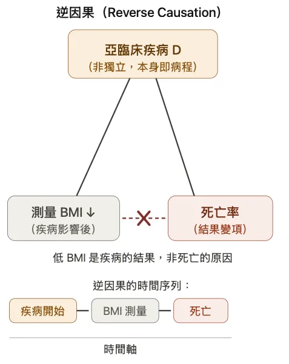
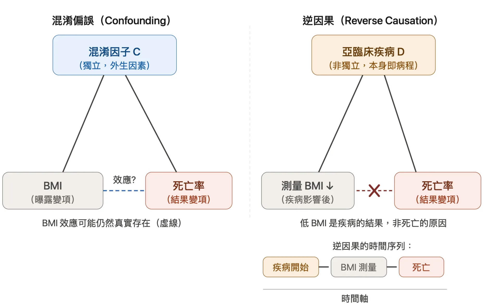
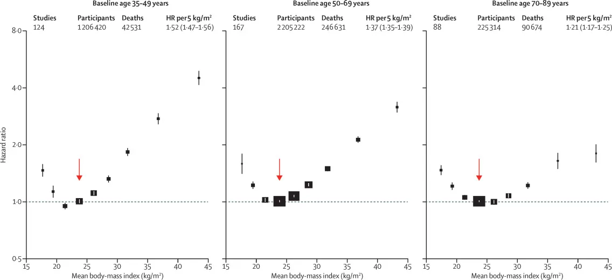

一、從「微胖更長壽」的新聞說起：這樣的標題為何是危險的
自由時報在 2026 年 4 月 8 日的一篇報導，我覺得有必要停下來認真討論。健康新聞常被一般民眾視為調整飲食、體重與生活習慣的重要依據；因此，當新聞在追求吸引目光的標題時，如果沒有清楚交代研究限制、證據品質與正確的因果解讀，就可能讓民眾建立錯誤的健康概念，甚至影響實際行為，造成嚴重後果。
這篇新聞的標題明確寫著：「老人微胖較長壽」。內文中也使用了相當篤定的因果語言，例如：「有研究證明老年人體重略重些（24≤BMI<30）可減少相對死亡風險。」文章中更引述營養師說法：「身高 165 公分的男性或女性，年輕體重維持 50–65 公斤是比較健康的；進入 70 歲時，體重維持 57–65 公斤可比較長壽。」
我認為，這樣的說法需要被仔細地重新檢視。問題不是長者過瘦、肌少症或營養不足不重要；事實上，這些都是高齡健康中非常重要的議題。真正的問題在，這篇報導把一個觀察性研究中的死亡率差異，過度詮釋成「微胖可以讓人更長壽」的健康建議。
這樣的詮釋至少忽略了三個重要問題。第一，相關性不等於因果性；第二，體重與死亡率之間可能受到吸菸、慢性病、身體活動、營養狀態與社經條件等因素混雜（confounding）；第三，低 BMI 與較高死亡率之間的關聯，可能受到反向因果關係（reverse causation）影響。
本文接下來要介紹的就是這種健康新聞中很常見的錯誤判讀：反向因果關係，或說逆因果，英文是 reverse causation 或 reverse causality。
二、生活例子：消防員出動越多，火災財損越嚴重。是消防員造成財損嗎？
假設我們統計某城市過去一年的火災紀錄，可能會發現一個關係：出動的消防員人數越多，該場火災造成的財物損失也越嚴重。
如果只看這個關聯，似乎可以提出一個近乎荒謬的推論：消防員會造成財物損失，所以我們才看到消防員出動越多人，損失就越大。若要減少火災損失，消防局以後應該減少出動人數。
這當然是不合理的。
比較合理的解釋是：火勢越嚴重財損越多，勤務中心會派出更多消防員。
這個例子說明了反向因果與錯誤因果判讀的核心：我們看到 A 和 B 有關，不代表 A 造成 B。有時候，是 B 背後的疾病嚴重程度、健康惡化或事件狀態、或是 B 本身，反過來導致了 A 的出現。
三、醫學例子一：BMI 與死亡率——微胖促進長壽？
回到本文一開始提到的新聞。該報導引用某研究觀察到的結果：老年人中，BMI 較高者的死亡率低於 BMI 較低者。那麼，我們能不能直接說：「微胖讓人更長壽」？
答案是：不能。
原因在於，一個人的 BMI 偏低，可能來自完全不同的情境。有些人是長期健康、規律運動、飲食品質好，因此體重較低；但另一些人則可能是因為慢性疾病、癌症、慢性阻塞性肺病、憂鬱、衰弱、肌肉流失或營養不足，導致食慾變差、體重下降。
這兩種「瘦」在健康意義上完全不同。前者可能代表良好的生活型態；後者則可能是健康惡化的結果。
如果研究沒有辦法區分這兩群人，就會把「健康地瘦」和「生病造成的瘦」混在一起。這時候，低 BMI 組的死亡率可能會被後者拉高，讓研究結果看起來像是：
低 BMI → 死亡率較高
但另一個同樣重要、而且必須被認真考慮的解釋是：
潛在疾病、衰弱或肌肉流失 → 體重下降、BMI 較低
潛在疾病、衰弱或肌肉流失 → 死亡風險升高
以下圖幫助理解：

換句話說，真正造成死亡風險升高的，可能不是「瘦」本身，而是讓人變瘦的疾病與衰弱狀態。
細心的讀者可能會問：這樣的結構，看起來很像我們說的confounding bias，看似也是一個第三個變項同時影響 BMI 和死亡率？兩者確實在圖形上相似，但有一個關鍵差異：混淆偏誤中的「第三個變項」，是一個獨立的外部因素（例如吸菸習慣、社經地位），它與死亡結果的病程是分開的；而在逆因果的情境裡，這個所謂的「第三個變項」，就是疾病過程本身——它不是從外部獨立影響兩個變項，而是走向死亡的病程已經提前開始，並且在我們測量 BMI 之前，就已悄悄地讓體重下滑了。因此，我們測量到的「低 BMI」，不是這個人在健康時的真實體重基準，而是疾病已開始運作之後的讀數。
這就是逆因果在 BMI 與死亡率研究中的典型面貌。時序是理解它的關鍵：疾病或衰弱先發生，然後造成 BMI 下降，我們才在某個時間點量到這個偏低的 BMI，最後疾病持續進展造成死亡。我們觀察到的「低 BMI → 較高死亡率」，不是 BMI 低本身所致，而是同一個潛藏的疾病，在時間上先讓體重下降，也讓死亡風險升高。
因此，微胖者死亡率較低不能直接被翻譯成微胖促進長壽。更精確的說法應該是：在某些高齡族群中，偏低 BMI 可能包含一群已經出現疾病、衰弱或肌肉流失的人；如果研究沒有妥善處理這個問題，就可能讓 BMI 較高者看起來比較安全，甚至被誤讀成比較健康。
四、續前例：有沒有更嚴謹的方法學、更好的證據？
我們接下來看流行病學家有什麼法寶處理這個問題。
近代具代表性的重磅研究是 2016 年發表在 The Lancet 的一篇個別參與者層次資料統合分析（individual participant level meta-analysis）。我在哈佛的導師，Prof. Frank B. Hu，肥胖流行病學教科書作者兼泰斗級人物，名列作者群中。這篇研究納入 239 個前瞻性研究、超過一千萬名參與者；但真正作為主要分析的，是其中約四百萬人。為了避免吸煙導致體重下降卻導致死亡率上升的confounding，他們增加一個限制：非吸煙者分析。為了避免慢性疾病造成死亡率上升以及體重下降的反向因果，他們同時限制：在基線無慢性病且活超過五年的人。這樣的設計，正是降低了吸菸混雜與反向因果的影響。
在這樣較嚴謹的分析下，研究發現全因死亡率最低的 BMI 區間約為 20.0–25.0 kg/m²。換句話說，當研究者盡量排除「因病變瘦」與吸菸混雜後，結果並不支持把「微胖」簡單視為較健康或較長壽的狀態。
聰明的讀者可能會問：可是原新聞談的是老年人，用一般成人的研究結果來反駁是否有外推性不足的問題？
這是合理的問題，而研究者也有處理。這篇大型統合分析進一步依年齡分層。根據原文Figure 2，不論是基線年齡 50–69 歲，或是 70–89 歲的族群，死亡風險最低的 BMI 區間仍大致落在 22.5–25.0 kg/m² 附近，而不是新聞所暗示的「越接近微胖越好」。

這並不是說高齡者的體重判讀不需要特別謹慎。高齡者確實需要注意肌少症、營養不足、非自願體重下降。只是，這些問題不能被簡化成「微胖比較長壽」。更精確的理解應該是：在老年人中，過瘦有時可能是健康惡化的訊號；但這絕不等於肥胖本身具有保護效果。
在撰寫此文的同一天，我恰好在三大心臟科學期刊之一的美國心臟科學院期刊（Journal of American College of Cardiology (JACC)）上看到一篇極為精彩的文章，孟德爾隨機化研究法（Mendelian Randomization Study）可以提供給我們更接近的因果關係證據，這篇論文我預計將在之後撰寫專文介紹解析。這裡講結論：本研究利用孟德爾隨機化研究方法（更貼近因果推論），關心 BMI 與死亡在心衰竭患者的關係。過去 BMI 與心衰竭的關係同樣發生了 obesity paradox 。而本文利用該方法學，發現不論患者的左心室射出分率高低，較高的 BMI 與較高的全因死亡和心臟病因死亡風險相關，並沒有如同一般觀察性研究發現的J型曲線。
五、醫學例子二：血壓與死亡風險
多篇觀察性研究曾指出：在年長者中，較低的血壓似乎與較高的死亡率有關（Molander et al. 2008、Hakala et al. 1997）。這似乎與我們既有的常識，降低血壓保平安，有所衝突。該如何詮釋？
有一個可能的假說應該是：較低的收縮壓可能是死亡前健康惡化的 marker，而不是死亡的原因。
假說是要被驗證的，2017 年在 Circulation 上的一篇文章給予了我們很棒的證據。Ravindrarajah 等人利用英國 Clinical Practice Research Datalink 先是再次確認了收縮壓與死亡率的J型曲線關係，但是他們不止於再次確認，他們進一步去看到：
死亡者在死亡前 5 年的 SBP 下降幅度，比存活者更大；尤其在死亡前 2 年下降更明顯。而且這個下降模式不論有沒有使用降血壓藥都存在。
因此這一篇文章的 editorial 也指出，這可能比較像是 innate, nonpharmacological accelerated terminal decline in SBP，也就是一種接近死亡前、非藥物造成的血壓加速下降。他們進一步把這稱為反向因果：是 premorbid condition 改變了 risk factor，而不是 risk factor 造成死亡。
我們已熟知隨機對照試驗（randomized controlled trial, RCT）是因果推論的黃金標準，那有沒有這個爭點上的RCT證據呢？有的。高血壓領域中極為知名的 SPRINT study 告訴我們：>75歲的人，將收縮壓降到 120 mm Hg 以下可以減少33%的全因死亡風險。注意，這是我們少數使用降低這個因果語言，這裡使用因果語言是合理的，因為這是一篇設計良好的隨機對照試驗，較能支持因果推論。原文作者也只稱，這個RCT證據更應該被拿來視為真實關係。
六、結論：看到現象後，加入反向因果的思考邏輯
回到本文一開始的新聞。「老人微胖較長壽」這樣的說法危險之處在於，新聞把一個觀察性研究中的死亡率差異，過度簡化成健康建議的結論（微胖比較好、微胖可以讓人更長壽）。但從反向因果的角度來看，事情可能完全不是這樣。
在 BMI 與死亡率以及血壓與死亡率的這兩個例子中，低 BMI 組、低血壓組死亡率較高，可能不是因為瘦造成死亡或是低血壓造成死亡，而是因為有些人早已有慢性病、衰弱、肌肉流失或營養不良，這些健康惡化的過程先讓他們變瘦或血壓變低，也讓他們之後更容易死亡。這時候，我們看到的關係就不一定是體重／血壓本身作為原因造成的結果，而可能是疾病過程留下的痕跡。
當我們用方法嚴謹的觀察性研究時，我們發現最低死亡率落在 20–25kg/m² 。當我們利用隨機對照試驗去測試「積極降血壓」是否有益時，結果顯示較積極的降壓治療可以降低死亡與心血管事件風險。
這就是反向因果最重要的提醒： 我們不能只看兩件事一起出現，就急著判斷誰造成誰。
健康研究真正重要的問題，常常不是「哪一組死亡率比較低」，而是：
- 這一組人為什麼會在研究開始時就是這樣？
- 他們的體重、血壓或其他健康指標，是長期穩定的狀態，還是疾病惡化後的結果？
- 研究有沒有處理吸菸、慢性病、追蹤初期死亡、非自願體重下降與肌少症？
- 這是觀察性研究，還是能更接近因果推論的研究設計？
因此，微胖更長壽不應被讀成肥胖具有保護效果，更不應被當成不用管理體重、腰圍、血壓、血糖與心血管風險的理由。比較精確的解讀應該是：在高齡者中，過瘦有時可能是健康惡化、肌少症或營養不足的警訊；但這不代表增加重量本身可以促進長壽。
結論是：
「微胖更長壽」這類標題真正該教我們的，不是胖一點比較健康，而是健康研究中的因果方向，值得我們多花一點時間，雙向思考。